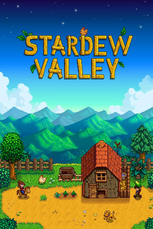

The Game
Stardew Valley is a farming simulation game created by ConcernedApe. The player moves to Stardew Valley and takes over their grandfather's old farm.
Players can grow crops, raise animals, fish, explore mines, and meet the people who live in the town.

Written Reflection
Read my reflection about the CSS selectors and design choices used in this website.
Read my CSS reflection (PDF)